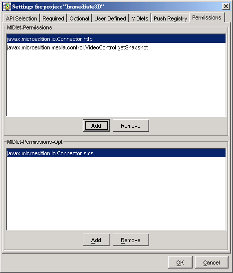
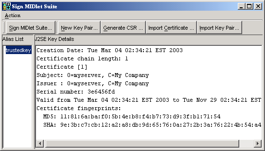
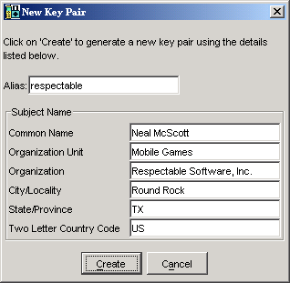
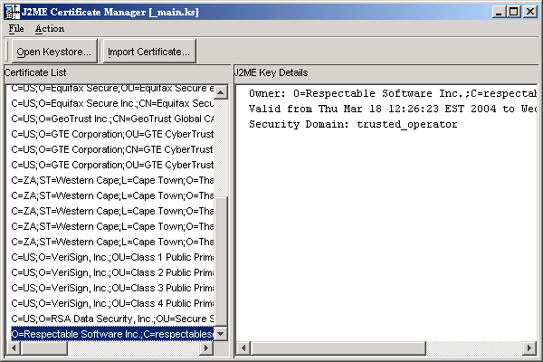

|
|
MIDP 2.0 includes a comprehensive security model based on protection domains. MIDlet suites are installed into a protection domain which determines access to protected functions. The MIDP 2.0 specification also includes a recommended practice for using public key cryptography to verify and authenticate MIDlet suites.
For definitive information, consult the MIDP 2.0 specification. For an overview of MIDlet signing using the J2ME Wireless Toolkit, read this article:
Understanding MIDP 2.0's Security Architecture
http://developers.sun.com/techtopics/mobility/midp/articles/permissions/
If you need more background on public key cryptography, try this article:
MIDP Application Security 1: Design Concerns and Cryptography
http://developers.sun.com/techtopics/mobility/midp/articles/security1/
This chapter describes support for protection domains, permissions, and MIDlet signing in the J2ME Wireless Toolkit.
MIDlets must have permission to perform sensitive operations, like connecting to the network. Permissions have specific names, and MIDlet suites can indicate their need for certain kinds of permissions through attributes in the MIDlet suite descriptor.
In the J2ME Wireless Toolkit, you can add these permission attributes to a project by clicking on the Settings... button in KToolbar. Select the Permissions tab. The MIDlet-Permissions box shows permissions which the MIDlet must possess, while the MIDlet-Permissions-Opt box contains permissions that the MIDlet would like to have but does not need absolutley.

To add a permission to either box, click on Add and choose the permission you want to add. To remove a permission, highlight it and click on Remove.
The J2ME Wireless Toolkit includes four protection domains:
minimum domain are denied all permissions.untrusted domain provides a high level of security for applications whose origins and authenticity cannot be determined. The user is prompted frequently when the application attempts a sensitive operationtrusted domain is a happy place for MIDlets where all permissions are granted.maximum domain is equivalent to trusted.
When you press the Run button to run your application in the emulator, your code runs in the untrusted protection domain by default. You can change which protection domain is used by choosing Edit > Preferences... from the KToolbar menu. Select the Security tab. You can now choose the default protection domain from the combo box.
Things are different when you use Run via OTA. Your packaged MIDlet suite is installed directly into the emulator, and it is placed in a protection domain at installation time. The emulator uses public key cryptography to determine the protection domain of installed MIDlet suites.
If the MIDlet suite is not signed, it is placed in the untrusted domain. If the MIDlet is signed, it is placed in whatever protection domain is associated with the root certificate of the signing key’s certificate chain.
For example, suppose Respectable Software, a hypothetical company, wants to distribute a cryptographically signed MIDlet suite. Respectable Software buys a signing key pair from Super-Trustee, a hyptothetical certificate authority. Using the signing key, Respectable Software signs the MIDlet suite, and distributes their certificate with the MIDlet suite. When the MIDlet suite is installed on the emulator, or on a device, the implementation verifies Respectable’s certificate using its own copy of Super-Trustee’s root certificate. Then it uses Respectable’s certificate to verify the signature on the MIDlet suite. Assuming everything checks out, the device or emulator installs the MIDlet suite into whatever protection domain is associated with Super-Trustee’s root certificate.
The J2ME Wireless Toolkit provides tools to sign MIDlet suites, manage keys, and manage root certificates.
To sign a MIDlet suite, you must package it first. Then choose Project > Sign from the KToolbar menu. The signing window appears.

Signing is very easy. Just select the key you want to use in the Alias List and click on the Sign MIDlet Suite... button.
The MIDlet signing window can also be used to manage keys.
To create an entirely new key pair, click on New Key Pair... The toolkit prompts you for a key alias and information that will be associated with the key pair.

After you click on Create, the toolkit prompts you to choose a protection domain. The connection between the key pair you just created and a protection domain might seem oblique, but it makes perfect sense:
Now imagine what happens when you install a MIDlet suite signed with your new key:
The ability to create a key pair and sign a MIDlet within the J2ME Wireless Toolkit environment is for testing purposes only. When you run your application on an actual device, you must obtain a signing key pair from a certificate authority recognized by the device.
The procedure for signing MIDlet suites with real keys works like this:
You can now use your own private key to sign MIDlet suites. The J2ME Wireless Toolkit will take care of the details of placing the signature and your certificate into the MIDlet suite.
You may have keys in a J2SE keystore that you would like to use for MIDlet signing. In this case, you need to import your signing keys to the J2ME Wireless Toolkit so that you can sign your MIDlet suite. To do this from the MIDlet signing window, click on Import Key Pair... Select a file that contains a J2SE keystore. You will be prompted for the keystore passphrase. Then select the alias for the key pair you wish to import. Finally, you will need to select a protection domain for the key pair’s root certificate.
To remove a key pair from the MIDlet signing window, select its alias and choose Action > Delete Selection.
You’ve already heard about the emulator’s list of root certificates. In this section, you’ll learn how you can manage this list using the J2ME Wireless Toolkit.
Real devices have similar lists of root certificates, although they cannot usually be modified by the user. When you want to deploy your application on a real device, you’ll have to use signing keys issued by a certificate authority whose root certificate is present on the device. Otherwise, the device will be unable to verify your application.
While you’re developing your application, the toolkit’s certificate management utility provides a convenient way to manipulate the emulator’s list of root certificates for testing purposes.
Choose File > Utilities... from the KToolbar menu. Click on the Manage Certificates button to open up the certificate manager window.

Each certificate is shown as a single line in the left part of the window, the Certificate List. When you click on a certificate, its details are shown in the right part of the window. You’ll also see the certificate’s associated protection domain.
You can import certficates either from certificate files or from J2SE keystore files.
To import a certificate from a file, click on Import Certificate... in the certificate manager window. After you locate the certificate file, choose which protection domain is associated with the certificate.
To import a certificate from a J2SE keystore, choose Action > Import J2SE Certificate from the menu in the certificate manager window. First, choose a protection domain for the certificate. Then select the keystore file and enter the keystore password. Finally, select the alias for the certificate you wish to import.
To remove a certificate from the list, select the certificate and choose Action > Delete Selection.
|
|
J2ME Wireless Toolkit User's Guide J2ME Wireless Toolkit 2.2 |
Copyright © 2004 Sun Microsystems, Inc. All rights reserved. Use is subject to the license terms.